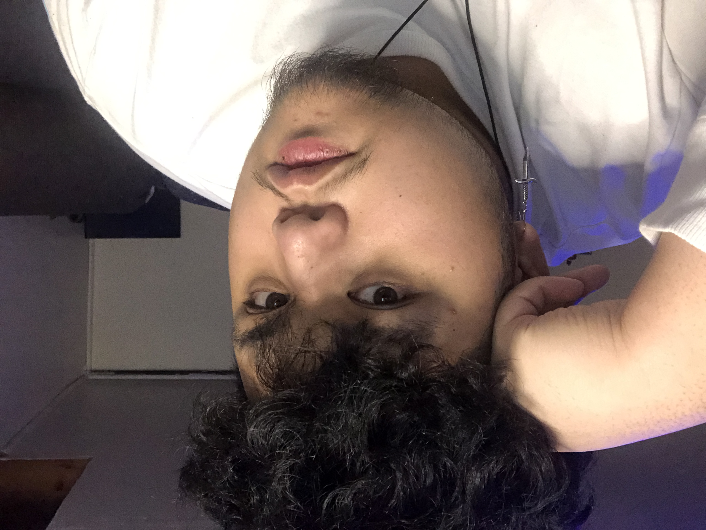

About Me
Hello, Welcome to my webpage! My name is Marc Joya, born and raised in Newmarket, Ontario.
I am currently 22 years old and live with my family in my hometown.
I took IMD because I was really interested to see what this program holds, as well as the fact that it looked like a genuinely promising course!
I had a bit of experience in html but it was in highschool, so honestly I'm back at stage one.
Other than school, I currently have a part-time job at Mcdonalds. I have a huge interest in video games, anime, and videography!
I actually have an annual project where I record clips of my friends and family throughout the year and then I make one big montage highlighting the most memorable moments of the year.
I usually do a voice over as well, just talking about how much I appreciate them and how much they’ve impacted my life.
It’s very cheesy but, everyone likes to know that they’re appreciated every now and then right?
My Hobbies
- Video games
- Filming & Video editing
- Drawing and Designing (mainly on illustrator)
"People waste a lot of time. Then they wish for more. Want more hours in their days, more days in their years, more years in their lives. As if they had all that extra time, they could fix any mistake.Ekko, The boy who shattered time.
Here's the thing about time; if you can't make the most out of any given moment, then you don't deserve a single extra second."